Project Overview
This project's goal was modifying a 3D rendered scene by integrating visual effects using Adobe After Effects and Blender.
Final Result
Picture Frame & Middle Cylinder Tracking
Visual Showcase
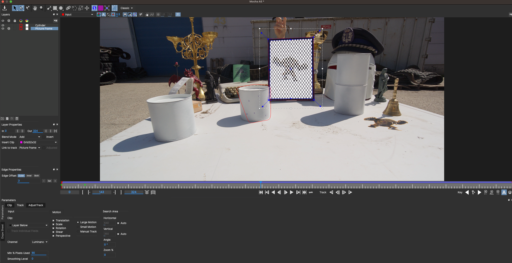
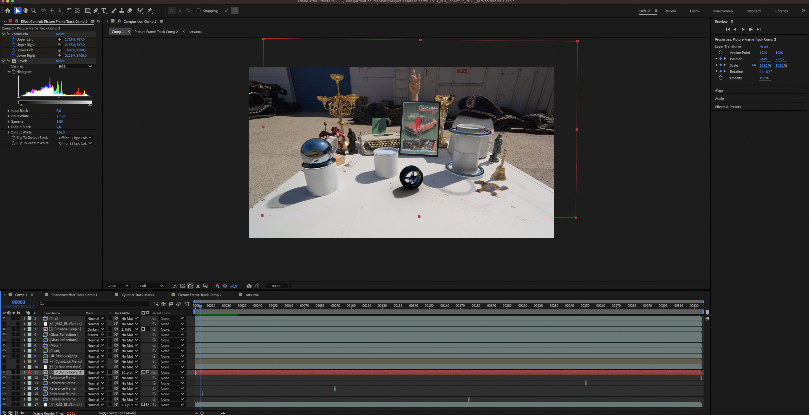
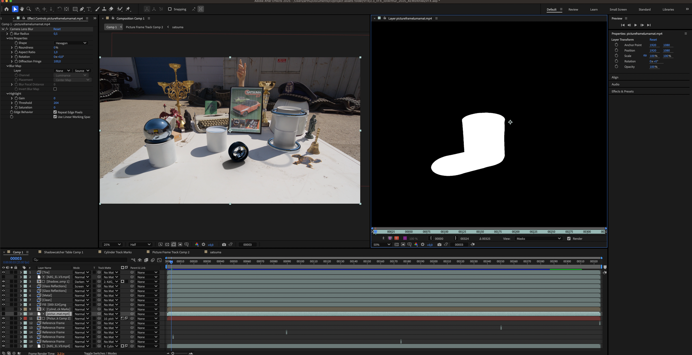
Short Summary
Tracked picture frame and cylinder using Mocha AE planar tracking with reference points to prevent drift.
Technical Breakdown / Stack
- Software: Adobe After Effects
Methodology
I used a planar tracker to keyframe both the positions of the image frame and middle cylinder inside of Mocha After Effects.
- Reference points have been used at the image corners to prevent tracking drift.
- Afterward, I created a Picture Frame Track, featuring a custom car poster, which is visible in the final product.
- Since the picture frame would further have glass in front of it, I used a levels modifier to give it more of a muted feel.
- The initial phase concluded with rotoscoping the middle cylinder to create a luma matte that would be composited over the picture frame.
Masking the Cylinder Track Marks
Visual Showcase
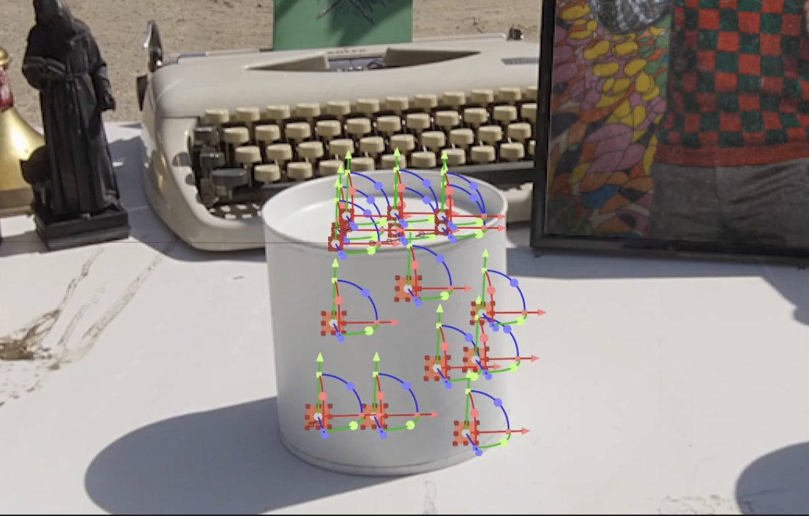
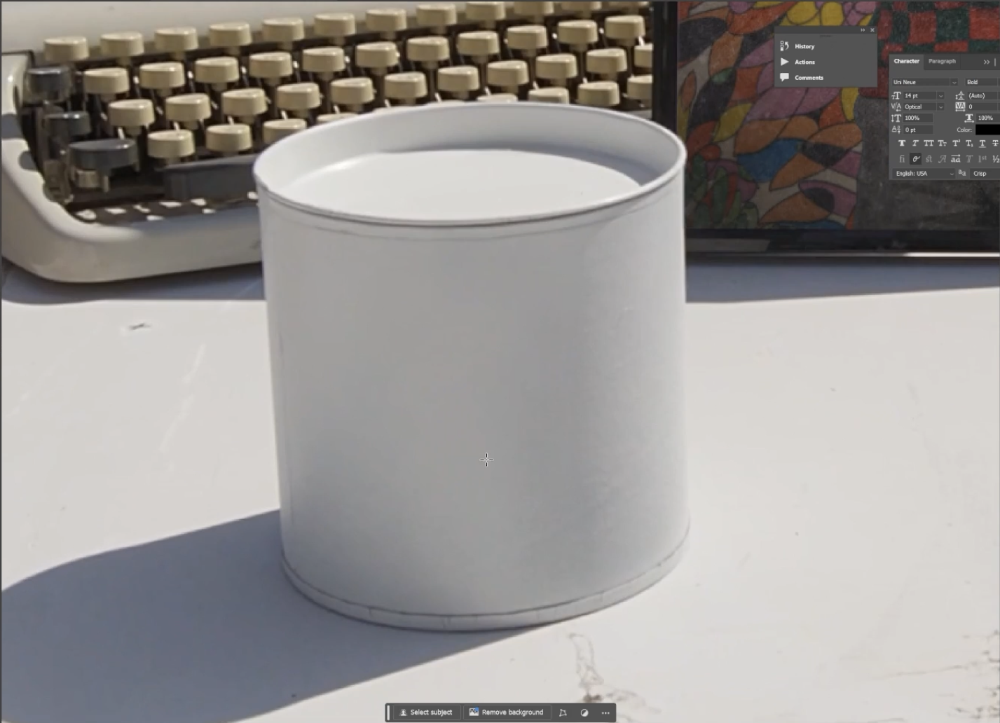
Short Summary
Removed tracking markers from cylinder using Photoshop's content-aware fill across multiple reference frames.
Technical Breakdown / Stack
- Software: Photoshop, Adobe After Effects
Methodology
I generated multiple reference frames using content-aware fill inside of Photoshop, which effectively helped generate a fill layer that masked the tracking dots from the cylinder.
Camera Solving in Blender
Visual Showcase
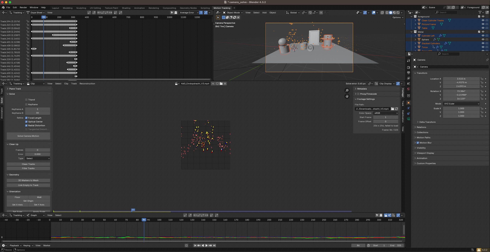
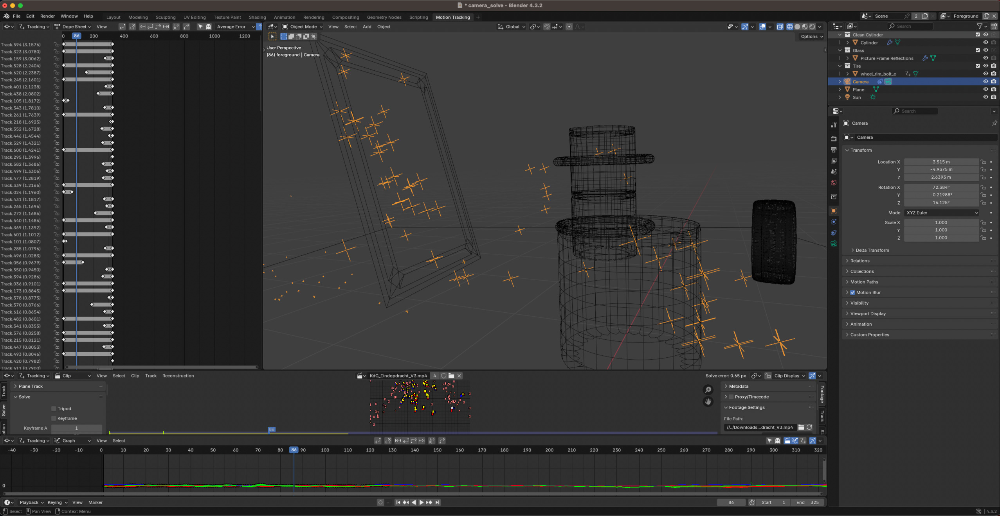
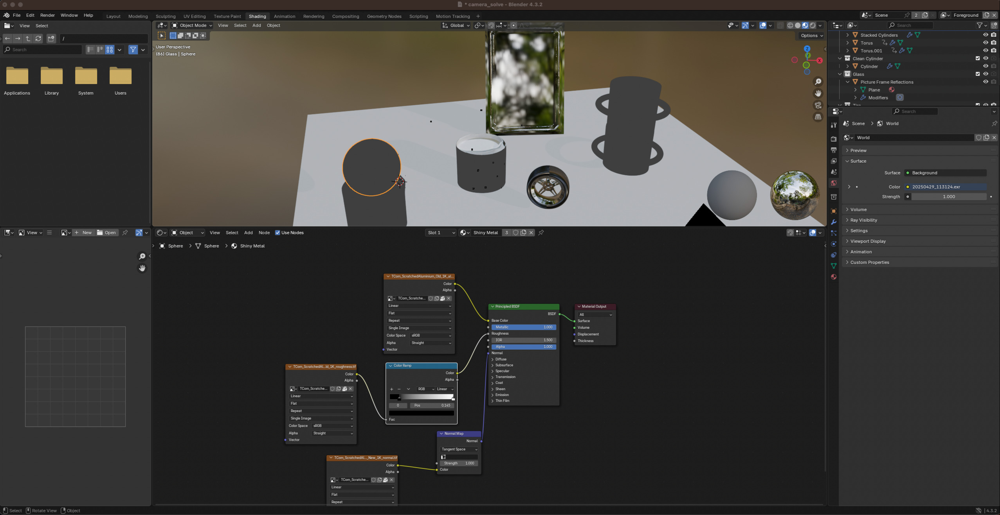
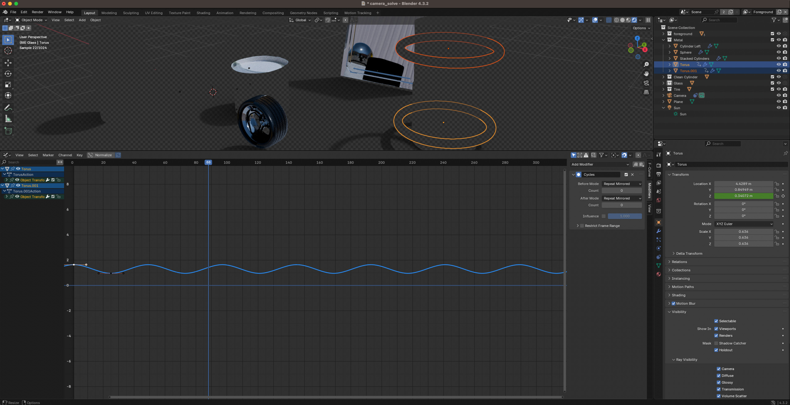
Short Summary
Used Blender's motion tracking to solve camera movement, added 3D objects (torus rings, wheel), created HDRI reflections and shadow catchers.
Technical Breakdown / Stack
- Software: Blender
Methodology
I began by entering Blender's Motion Tracking workspace where I prefetched the clip for better timeline responsiveness.
- Using "Detect Features", I found the trackable elements that stood out throughout the footage.
- After adjusting the correlation setting for more accurate tracking at the expense of processing power, I tracked markers both forward and backward through the timeline. I removed erratic tracks that could compromise the camera solve, then executed the "Solve Camera Motion" function.
- After carefully re-iterating my settings a couple of times, and selecting the tracks I knew would be easy for Blender's camera solver to track, I achieved a solve error of 0.65 pixels. I then set the X and Y axes based on an origin point I selected, after which I made sure the tracker points aligned with the locations of the geometry i needed to create.
- Finally, I incorporated HDRIs to create realistic reflective surfaces which I first used on a newly made Sphere, crafted a clean version of the cylinder's top interior lid (without tracking marks and with proper shadows), after which I animated two looping objects: reflective torus rings and a spinning wheel. I moved on by creating a shadowcatcher mesh, where I adjusted the material settings to only capture shadows of the extra added geometry without rendering the mesh itself (with the help of a sun object that I rotated and set the intensity of accordingly).
Importing the Blender changes to After Effects
Visual Showcase
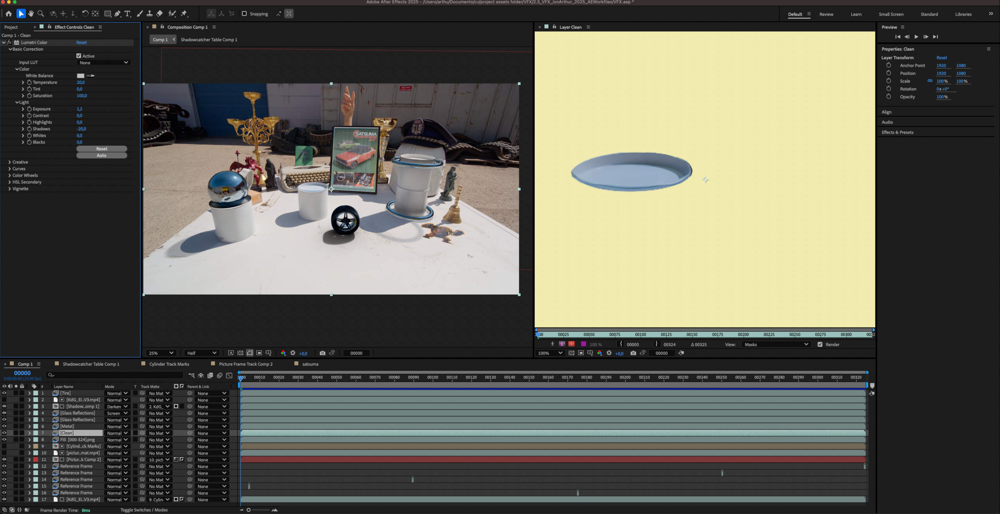
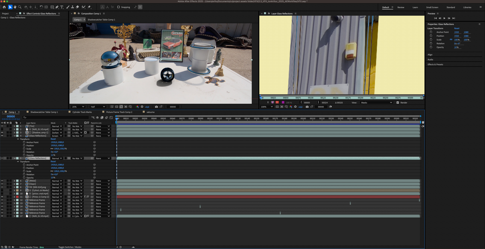
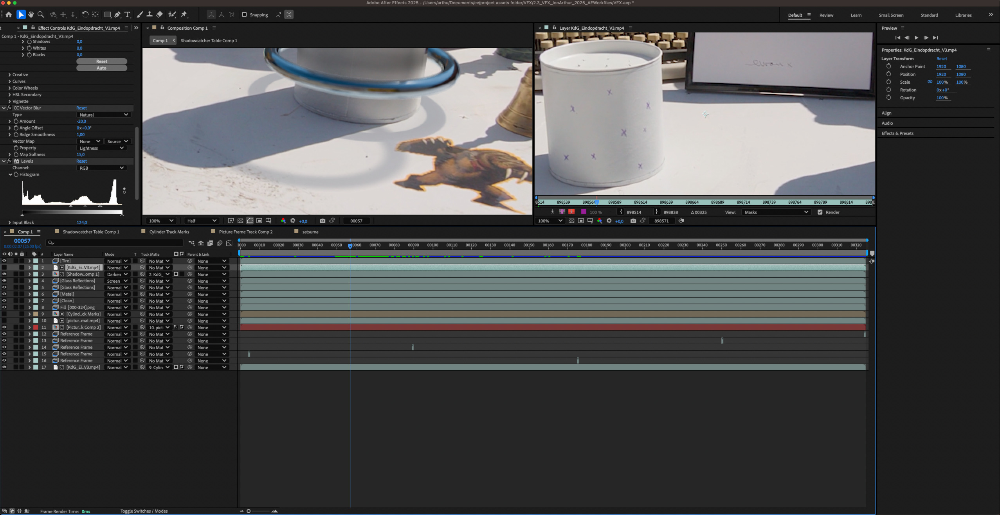
Short Summary
Composited Blender renders in AE, adjusted glass reflections and shadow colors, applied vector blur for softer edges, exported at 35 Mbps h264.
Technical Breakdown / Stack
- Software: Adobe After Effects
Methodology
After rendering and importing everything I required from Blender (shadows, reflective surfaces and new objects), I proceeded with the final compositing touches inside of After Effects.
- I applied a Lumetri Color modifier to the cylinder top in order to clean it up, then adjusted the glass reflection opacity to reveal the underlying image.
- Using a fill modifier, I color-corrected the shadowcatcher to better match scene lighting.
- (Note: The wheel object's shadow color couldn't be modified without re-rendering the shadow catcher, which time constraints prevented.)
- As a finishing touch I applied vector blur to soften harsh shadow edges. The final video was rendered out in Adobe Media Encoder, using an H264 format with a constant bitrate of 35 Mbps.